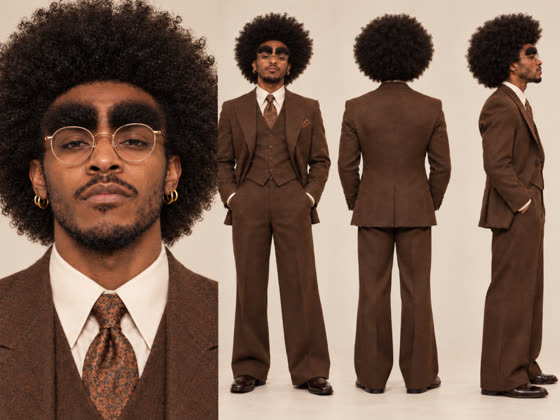
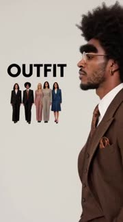
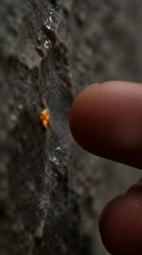
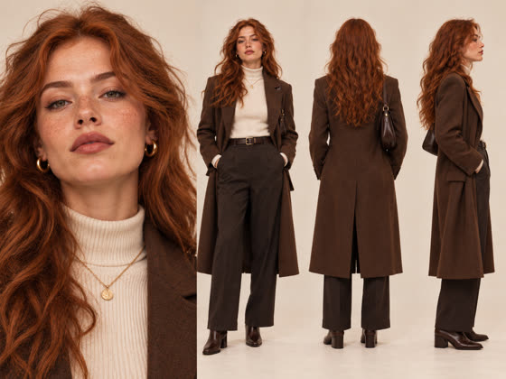
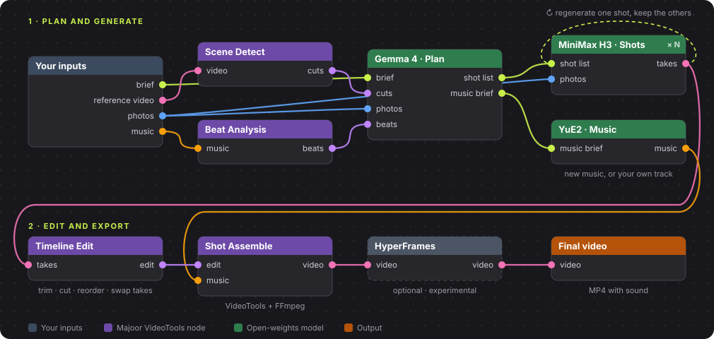
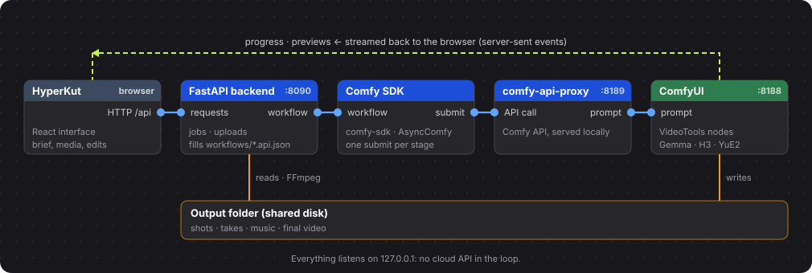

HyperKut makes short multi-shot videos, viral clips or tiny stories, and lets you keep directing them. Remix a reference edit, start from an idea or build around your music. Open-weights models in ComfyUI, on your own GPU.
Inspired by Higgsfield's Katana, Genjutsu and Cinema Studio. Built for the Comfy Open Source Higgsfield challenge.


The cuts, framing and rhythm are read from the reference. Every shot is redrawn with your subject, and any one of them can be regenerated alone.

A local model writes the shot list from your idea. You can edit each shot's prompt before or after it renders. A soundtrack is generated too.

The track's beats and energy set the shot lengths. The music stays yours, untouched.
Real projects and real exports, no retouching. Times run from submit to finished video on the first run. Everyone shown is AI-generated by the author.
Every mode ends in the same place: a plan of shots you can read, change and regenerate one by one.
Bring an edit you love and photos of your subject. HyperKut keeps its cuts, framing and rhythm and puts your subject in every shot.
Write a short idea. A local model turns it into a shot list, the shots render, and a soundtrack is generated to fit.
Drop your track and an idea. The beats set where each cut lands, so the edit moves with the music.
A generated edit is a first cut, not a final answer. Everything after generation stays editable.
Change a shot's prompt and render only that shot. The other shots stay exactly as they are.
Keep several takes of a shot and swap between them on the timeline.
Trim, cut and reorder shots, then export. No new render needed.
Median time from submit to finished video, for every first-run project in the author's workspace. One RTX 4090 (24 GB), model loading included.
13 projects · about 3 shots and 10 s each
16 projects · about 4–5 shots and 9 s each
9 projects · about 6 shots and 15 s each
38 first-run projects, read from the project files: time from project creation to the exported video. Projects that were edited and re-rendered afterwards are left out, since their file times include the later work. Remix projects with many short shots take longer: the 28-shot fashion Remix above took 21 minutes.
Click a preview to watch it with sound.
The fashion Remix reference video belongs to silver.muse. Thank you for the inspiration.
MiniMax H3 renders the shots, Gemma 4 plans them, YuE2 writes the music, FLUX.2 klein draws optional location plates. No credits, no cloud. Each model keeps its own license: see LICENSES.md.
The Studio fills a ComfyUI workflow for each job. The workflows are in the repo, built from Majoor VideoTools nodes, so you can open and change them.
Jobs go through the official Comfy SDK to the Comfy API, served locally by comfy-api-proxy in front of your ComfyUI. Progress and previews stream back to the browser.
The Studio is open source under MIT. Projects, takes and exports stay in your own folders.

Simplified node graph of a HyperKut job.

How the servers talk.
Optional finishing, custom ports and details: full installation guide.
cd ComfyUI\custom_nodes\ComfyUI-Majoor-VideoTools git clone https://github.com/MajoorWaldi/HyperKut-Studio "HyperKut Studio"
python -m venv .venv .\.venv\Scripts\python.exe -m pip install -r requirements.txt Push-Location frontend; npm ci; npm run build; Pop-Location
.\scripts\run_studio.ps1 # http://127.0.0.1:8090/